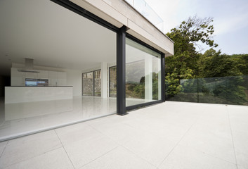
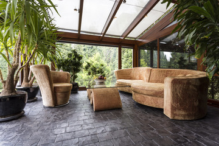
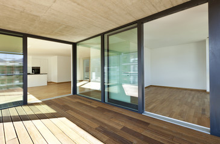
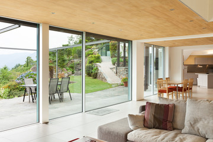

Si vous souhaitez construire une véranda à Thiais ou dans le Val-de-Marne, nous sommes à votre disposition pour vous écouter et vous conseiller. Nous concevons avec vous la véranda de vos rêves, la construisons pour vous et la posons nous-mêmes, sans faire appel à la sous-traitance. Nos différents corps de métier se relaient chez vous et vous accompagnent du début du projet jusqu’à la livraison de votre véranda prête à être habitée.

Votre véranda sur mesure
Nous construirons pour vous une véranda entièrement sur mesure, personnalisée dans tous ses détails, afin qu’elle réponde parfaitement à vos exigence pratiques aussi bien qu’esthétiques. Véranda victorienne ou design, en L, rayonnante, en pan coupé… sur cette base, nous concevons avec vous une véranda unique, qui s’intègre parfaitement dans son environnement. S’harmonisant à votre façade, elle valorisera votre habitation, en plus d’être la pièce de votre maison qui devra vite votre préférée.
Le choix de l’aluminium pour une véranda sans souci

Constructeurs de veranda thiais depuis de longues années, nous avons fait le choix de l’aluminium pour toutes nos réalisations. Matériau noble et résistant, l’aluminium supporte en effet sans broncher les aléas climatiques se prête à toutes les personnalisations. Il demande en outre peu d’entretien, ce qui est un grand plus par rapport aux vérandas en bois. Sans souci, votre véranda en aluminium défiera les années en restant belle et fonctionnelle.
Notre expertise à votre service

Pour tous vos projets de veranda thiais ou dans le 94, nos professionnels mettent leur expertise à votre service, depuis notre technicien conseil jusqu’aux poseurs, en passant par le métreur. Après l’avoir conçue et construite, nous posons en effet nous-mêmes votre véranda, ce qui est un gage de qualité. Bien entendu, toutes nos réalisations respectent les normes relatives à la construction de vérandas, afin que de vous garantir une construction de qualité parfaite.
Nous vous accompagnons de A à Z

Lorsque vous faites appel à nous, notre technicien conseil se déplace chez vous afin d’étudier votre façade, l’implantation de votre maison et son environnement. A votre écoute, en dialoguant avec vous, il vous aide à affiner votre projet et à concevoir la véranda de vos rêves. C’est pour vous la garantie d’une véranda répondant à vos désirs en matière de style et de fonctionnalité, tout en s’intégrant parfaitement dans votre jardin.
N’hésitez pas à nous solliciter, notre priorité est de vous écouter et de vous comprendre.